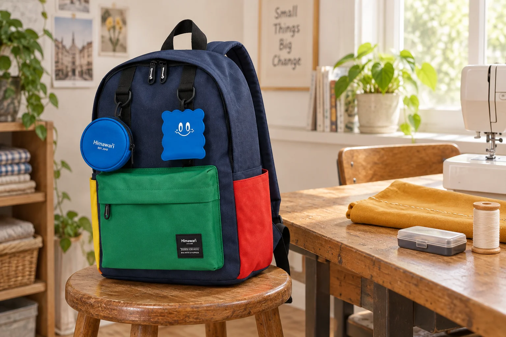

백팩 안감이 날카로운 도구와 닿지 않도록

공방에 갈 때 바늘과 가위를 케이스에 담으면 도구 준비가 한 묶음이 됩니다. 그다음에는 그 케이스가 백팩 안에서 어느 면에 놓이는지 봅니다. 뾰족한 끝을 가렸어도 케이스의 단단한 모서리가 천과 맞닿을 수 있고, 다른 짐을 꺼내며 케이스가 돌아갈 수도 있습니다. 도구의 적절한 보관재를 고르는 일과 그 보관재를 가방에 배치하는 일은 이어져 있습니다.
일상 백팩 안감을 도구를 고정하는 재료로 쓰지 않는 것이 출발점입니다. 천이 손에 잘 잡히거나 작은 주머니가 있다는 이유로 바늘을 직접 꽂아 위치를 표시하지 않습니다. 도구는 길이와 형태에 맞는 닫힌 보관재를 사용하고, 백팩에서는 그 묶음이 놓일 자리를 고릅니다. 여러 종류를 한꺼번에 더하기 전에 오늘 가져갈 케이스 하나와 가방 안쪽의 관계부터 볼 수 있습니다.

겉에서 보이는 주머니와 안쪽의 천
Himawari No.0422 블루의 실제 제품 사진에서는 짙은 몸체와 앞쪽의 초록색 주머니, 옆쪽의 빨간 부분이 구별됩니다. 외부 크기는 가로 30 × 세로 40 × 폭 15cm이며 제품 정보의 겉감과 안감은 폴리에스터로 안내됩니다. 이 소재명과 외부 사진은 바늘에 찔리거나 단단한 도구에 눌리는 힘을 견디는 정도를 알려주는 자료가 아닙니다. 도구 보관 조건은 해당 케이스의 안내에서 확인하고 가방 안쪽은 접촉 위치를 살펴봅니다.
케이스를 닫은 상태에서 가장 튀어나온 모서리와 잠금 부분을 봅니다. 가방 안에 넣기 전에 어떤 면이 평평하고 어디가 단단하게 돌출되어 있는지 알면 배치할 때 기준이 생깁니다. 작은 크기의 도구라 해도 끝을 가리지 않은 채 얇은 천 주머니에 흩어 넣는 방식과는 구별해야 합니다. 안감을 살피는 준비는 도구를 제대로 보관한 묶음에서 시작합니다.
가방에 넣었을 때에는 넓은 면으로 놓을 수 있는지 봅니다. 케이스 모서리 하나만 바닥에 닿거나, 좁은 옆면에 세워져 다른 짐에 밀리는 모양일 수 있습니다. 실제 케이스의 운반 안내가 허용하는 방향 안에서 자리와 지지 면을 고릅니다. 가방 깊이가 맞아 보여도 그 위치에서 케이스가 자연스럽게 놓이는지, 여밈을 닫으며 위에서 누르게 되는지까지 이어서 볼 수 있습니다.
다른 짐을 꺼낸 뒤 달라지는 접촉
출발할 때 케이스 옆을 받치던 노트를 먼저 꺼내면 남은 공간이 달라집니다. 케이스가 옆으로 돌아가 안감이나 지퍼 안쪽에 다른 면을 대고 있을 수 있습니다. 평소 여러 물건을 번갈아 쓰는 날에는 처음 배치만 보고 끝내기보다 케이스를 다시 찾는 순간의 모습을 봅니다. 가방 안에서 움직일 수 있는 물건은 주변 물건이 바뀔 때 접촉도 달라진다는 점을 기억할 수 있습니다.
도구 케이스를 깊이 두면 다른 소지품을 먼저 옮겨야 꺼낼 수도 있습니다. 반대로 입구 가까이에 두면 자주 손을 넣는 길과 겹칠 수 있습니다. 언제 꺼낼지에 따라 어느 쪽이 자신의 사용에 맞는지 판단합니다. 공방에 도착해서만 꺼낼 묶음이라면 자주 쓰는 지갑과 다른 경로를 택할 수 있습니다. 이동 중 열어 쓸 물건이라면 안정된 자리에서 가방을 열어 케이스 전체를 꺼낼 구성이 필요합니다.
케이스를 꺼낼 때 천이 함께 당겨지는 느낌이 있으면 끌어내는 동작을 멈추고 닿은 곳을 봅니다. 손잡이나 돌출부가 걸렸는지, 지퍼 주변 천이 끼었는지 구분해야 합니다. 가방을 받친 상태에서 케이스와 천을 볼 수 있도록 공간을 만들면 어느 부품을 움직여야 하는지 알 수 있습니다. 보이지 않는 가방 안을 손으로 더듬어 날카로운 도구를 찾는 방식은 피하고 도구의 위치부터 확인합니다.
케이스를 더하는 선택과 가방을 바꾸는 선택
단단한 보관재를 쓰면 도구가 한 묶음으로 유지되는 대신 부피가 늘어납니다. 현재 백팩에 꽉 끼는 묶음이라면 억지로 밀어 넣기보다 다른 방향이나 운반 방법을 비교합니다. 넓은 가방을 고르면 여유가 생길 수 있지만 작은 케이스가 내부에서 움직이는 문제도 따로 봐야 합니다. 더 큰 가방이라는 한 조건만으로 접촉 위치까지 해결되지는 않습니다. 실제 보관재와 함께 선택하는 이유입니다.
가방 안에 여러 도구 케이스를 넣는 날에는 단단한 모서리끼리 만나는 자리도 봅니다. 작은 틈에 마지막 케이스를 끼워 넣으면 옆의 케이스가 안감 쪽으로 밀릴 수 있습니다. 주머니를 더 나누거나 다른 파우치를 쓰기 전에 각 묶음이 어떤 면으로 놓이는지 읽습니다. 케이스의 용도와 여밈을 유지하면서 꺼낼 순서가 이어지는 배치가 필요합니다. 빈 공간을 전부 사용하지 않아도 필요한 도구를 가져갈 수 있습니다.
귀가한 뒤에는 도구 묶음을 꺼낸 자리의 안쪽 천을 눈으로 살펴볼 수 있습니다. 실이 당겨졌거나 눌린 면이 보인다면 위치를 남겨 다음 배치를 바꿀 단서로 씁니다. 자국 위치를 이동 중 걸렸던 느낌, 현재 케이스의 돌출부와 함께 대조합니다. 관리나 수선이 필요한 상태라면 제품의 안내에 맞춰 확인하고, 안감의 실을 임의로 잘라 모양을 정리하기 전에 현재 상태를 보존합니다.
공방 가방을 고를 때에는 필요한 도구가 몇 개인지에 더해 닫힌 케이스의 모양을 남겨둡니다. 가방 입구를 지나는 방향과 안쪽에서 놓이는 면, 자주 꺼낼 다른 물건과의 경로가 이어지는지 보면 됩니다. No.0422 사진의 여러 색 주머니는 외형을 읽는 단서이고 실제 도구의 자리는 안쪽 구조와 함께 고릅니다. 다음 수업에는 바늘 정리법을 새로 만드는 대신 준비된 케이스가 안감과 만나는 그 위치부터 다시 볼 수 있습니다.